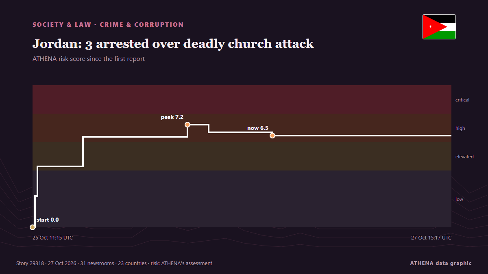

Jordan: 3 arrested over deadly church attack

Workers were cleaning the last traces of blood from St George's Church in Jordan's Hammoud the day after a deadly attack, when visitors arrived to express their solidarity amid an atmosphere of shock… von Al-Monitor
Unabhängig gemeldet von 31 Medien in 23 Ländern seit dem 25. Okt., zuerst von Asharq Al-Awsat (English); die Berichterstattung ist auf dem Höhepunkt. ATHENA stuft das Risiko als hoch ein (6.7/10), vor allem wegen der Schwere des beschriebenen Schadens und seiner geografischen und sektoralen Reichweite. Die Konfidenz liegt bei 89 % (hoch): 31 Medien bestätigen es unabhängig, bei einer mittleren Verlässlichkeit der Quellen von 78 %.
Warum es wichtig ist: Rechtliche und politische Änderungen verändern Rechte, Pflichten und öffentliche Leistungen für die Betroffenen.
Was sich geändert hat: 6 neue Berichte von 6 Redaktionen in den 24 Stunden bis 27. Okt..
Erste Schlagzeile: Jordan arrests three suspects over deadly church attack
Schlagzeilen werden auf Englisch angezeigt, wie veröffentlicht.
Auf einen Blick
Ausgewählt, bewertet und geschrieben nach der veröffentlichten Methodik von ATHENA. Kein Redakteur greift in einzelne Ereignisse ein. So entsteht ATHENA ›
| 25 Oct 11:13 UTC | 4 |
|---|---|
| 25 Oct 13:13 UTC | 0 |
| 25 Oct 15:13 UTC | 1 |
| 25 Oct 17:13 UTC | 0 |
| 25 Oct 19:13 UTC | 1 |
| 25 Oct 21:13 UTC | 0 |
| 25 Oct 23:13 UTC | 0 |
| 26 Oct 01:13 UTC | 0 |
| 26 Oct 03:13 UTC | 5 |
| 26 Oct 05:13 UTC | 5 |
| 26 Oct 07:13 UTC | 3 |
| 26 Oct 09:13 UTC | 5 |
| 26 Oct 11:13 UTC | 7 |
| 26 Oct 13:13 UTC | 3 |
| 26 Oct 15:13 UTC | 1 |
| 26 Oct 17:13 UTC | 0 |
| 26 Oct 19:13 UTC | 2 |
| 26 Oct 21:13 UTC | 0 |
| 26 Oct 23:13 UTC | 0 |
| 27 Oct 01:13 UTC | 0 |
| 27 Oct 03:13 UTC | 0 |
| 27 Oct 05:13 UTC | 0 |
| 27 Oct 07:13 UTC | 0 |
| 27 Oct 09:13 UTC | 0 |
| 27 Oct 11:13 UTC | 2 |
| 27 Oct 13:13 UTC | 0 |
| 27 Oct 15:13 UTC | 1 |
| 25 Oct 11:15 UTC | 0.0 |
|---|---|
| 25 Oct 11:32 UTC | 2.2 |
| 25 Oct 11:50 UTC | 4.3 |
| 25 Oct 17:29 UTC | 6.4 |
| 26 Oct 06:31 UTC | 7.2 |
| 26 Oct 09:08 UTC | 6.7 |
| 26 Oct 17:03 UTC | 6.5 |
| 27 Oct 15:17 UTC | 6.7 |
Warum diese Zahlen
Bedeutung
Risiko
Konfidenz
Die Berichterstattung – wer berichtete, und wann
Schlagzeile wie veröffentlicht · öffnet das Original- Asharq Al-Awsat (English) · Saudi-Arabien · Saudi ArabiaShock and Grief in a Jordanian Village after Church Attack
- Al-Monitor · Vereinigte Staaten · United StatesShock and grief in a Jordanian village after church attack
- Arab News · Saudi-Arabien · Saudi ArabiaJordan unites in grief as nine victims of church terror attack laid to rest
- Al Jazeera English · Katar · QatarJordanians mourn victims of deadly church attack
- Arab News · Saudi-Arabien · Saudi ArabiaJordanians reject attempts to sow division in society
- Express Tribune · PakistanJordan arrests three suspects in deadly church attack, state media says
- Arab News · Saudi-Arabien · Saudi ArabiaJordan arrests 3 over church attack
- Al-Monitor · Vereinigte Staaten · United StatesJordan arrests three suspects over deadly church attack after shootout, state media says
- Al-Monitor · Vereinigte Staaten · United StatesJordan arrests three relatives over deadly church attack after shootout, officials say
- ABC News (International) · Vereinigte Staaten · United StatesJordanian security forces say they've arrested three men in deadly church attack
- AzerNews · Aserbaidschan · AzerbaijanJordan arrests three suspects over church attack that killed nine
- Cyprus Mail · Zypern · CyprusJordan arrests three suspects in deadly church attack, state media says
- Shafaq News (English) · Irak · IraqJordan detains three suspects in deadly church attack
- CBS News (World) · Vereinigte Staaten · United StatesJordan says 3 arrested in deadly attack on Greek Orthodox church
- Arab Times · KuwaitJordan Arrests Three Suspects Over Church Attack That Killed Nine
- Gulf News · Vereinigte Arabische Emirate · United Arab EmiratesJordan arrests three suspects in Karak church attack after three-hour gun battle
- Sky News (World) · Vereinigtes Königreich · United KingdomThree men arrested in shootout after deadly attack on church in Jordan
- Daily Maverick · Südafrika · South AfricaJordan arrests three suspects in deadly church attack, state media says
- The New York Times (World) · Vereinigte Staaten · United StatesJordan Arrests 3 in Connection With Church Attack, State Media Reports
- DW English · Deutschland · GermanySecurity forces arrest suspects of deadly church attack in Jordan
- CBC News · Kanada · CanadaJordan says its air force undertook strikes against militant hideouts in Syria
- Al Jazeera English · Katar · QatarJordan arrests three suspects over church attack in dawn raid: What to know
- Oman Observer · OmanJordan arrests 3 in dawn raid over Karak attack
- Dawn · PakistanJordan arrests 3 in dawn raid over church attack
- Arab News · Saudi-Arabien · Saudi ArabiaJordan arrests 3 in dawn raid over deadly church attack
- MyJoyOnline · GhanaJordan arrests three men suspected of deadly church attack after shootout
- The New Arab · INTJordan says three family members behind Karak church attack
- Stuff · Neuseeland · New ZealandJordanian security forces arrest 3 men over last week's deadly church attack
- ProtoThema English ·Dendias tells Jordanian ambassador protecting Christian communities in Middle East is a priority for Greece
- ABC News Australia · Australien · AustraliaJordan arrests three relatives over deadly church attack
- France 24 English · Frankreich · FranceJordan's strikes on Syria over church terror attack kill several civilians
- Al-Monitor · Vereinigte Staaten · United StatesJordan arrests three suspects after deadly church attack: What to know
- Al Jazeera English · Katar · QatarJordan arrests three suspects over deadly church attack
- The Daily Star — page reader · Bangladesch · BangladeshJordan arrests three over church attack: state TV
- to vima · Griechenland · GreeceQueen Rania Comforts Families of Jordan Church Attack Victims
- Middle East Eye · INTJordanians rally around Christian community after church attack
- The Jerusalem Post · IsraelGreek Orthodox Patriarch tells 'Post' 'minority group of radicals' conducted Jordan attack